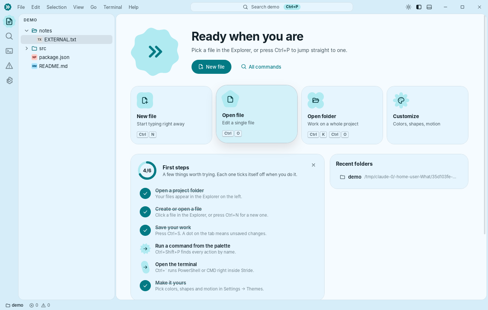

Code with a little more joy.
Stride is a small, fast code editor for Windows. Press F5 to run your code, see web pages live as you type, ask AI for help — and make it look exactly the way you like.

Everything you need, nothing that gets in the way
Built on the same editor core as VS Code, wrapped in a lighter, friendlier app.
Run with one key
F5 runs Python, JavaScript, C, C++, Rust, Go, Java and more in the built-in terminal.
Live HTML preview
See your page next to the code. CSS, JavaScript and images just work, and it refreshes on save.
AI assistant
Explain code, find bugs, write comments and tests — with Claude, OpenRouter or a free local model.
Extensions Workshop
Install themes, snippets and tools in one click — or build your own with a few lines of JavaScript.
Expressive design
Material 3 Expressive shapes and springy motion. Five presets, your own colors, roundness and density.
Made for beginners
A welcome tour, a “first steps” checklist and tooltips that explain what every button does.
A real terminal
PowerShell, CMD, Git Bash or WSL — several at once, right inside your project folder.
Tiny and fast
A 6 MB installer instead of a 100 MB one. Native Rust under the hood.
Bring your favourite AI
Your key stays on your computer. Pick the provider that suits you.
Claude
Anthropic's models directly — Opus, Sonnet or Haiku.
OpenRouter
One key for hundreds of models: Claude, GPT, Gemini, Llama, DeepSeek — including free ones.
Local models
Ollama, LM Studio or any OpenAI-compatible server. Private and free.